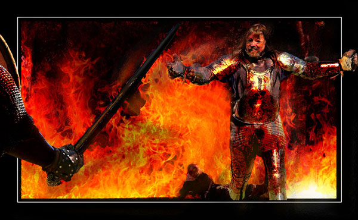

Guest Gallery
Rudy Labordus
Your Turn

(1 of 5)
Rudy Labordus lives in Perth, Australia, where he operates an innovative and award-winning advertising agency. He calls himself a PerthAdGuy. He took up photography a few years ago and more recently digital art as a passionate hobby and a means to unwind late at night after a hard day at the office. His digital art is almost wholely based on his photographs and are usually the product of much work and layering in Photoshop.